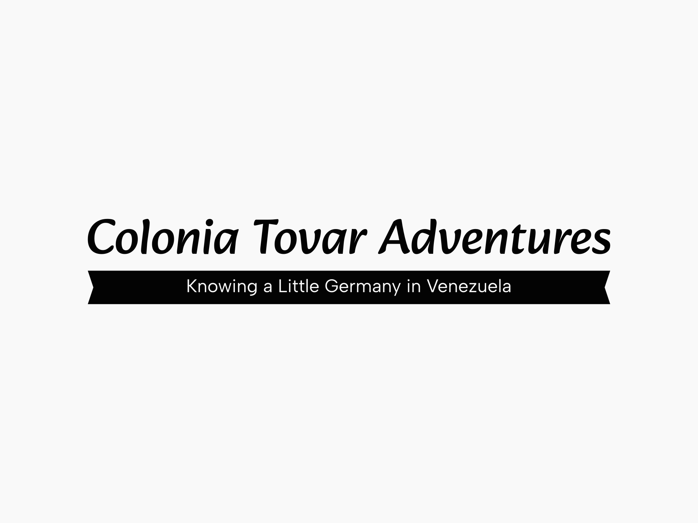

Overview
Site Purpose
The purpose of this website is to expand our market by providing customers with the opportunity to book vacation packages that include adventure activities in Colonia Tovar, Venezuela. We aim to offer 24-hour support and information about our activities. Additionally, we value the ability for customers to share their experiences and perceptions of our adventure packages in Colonia Tovar. The comments and reviews on our website will serve as a persuasive tool to encourage other potential customers to reach out tous and create unforgettable experiences during their vacations in Colonia Tovar, Venezuela.
Scenarios
We aim to reach a market segment seeking unique and adventurous vacations in Colonia Tovar, Venezuela. Our target customers are individuals aged 11 to 50, predominantly families or groups of families, who are looking for a vacation filled with activities that cater to all age groups. They have the financial means to plan week-long vacations with their families and are seeking the assurance of safety and enjoyment provided by our trained staff. Additionally, we recognize that most visitors will access our website using their mobile phones.
Branding
Website Logo
Style Guide
Color Schema
Palette URL: hhttps://coolors.co/d8f3dc-b7e4c7-95d5b2-74c69d-52b788-40916c-2d6a4f-1b4332-081c15
| Primary | Secondary | Accent 1 | Accent 2 |
|---|---|---|---|
| [#d8f3dc;] | [#b7e4c7;] | [#1b4332] |
Typography
Heading Font: Georgia
It is very readable and responsive to mobile
Paragraph Font: Georgia
The same reason of very readable and responsive to mobile
Normal paragraph example
The best adventure experience in Colonia Tovar, Venezuela! Our adventure company offers thrilling activities such as whitewater rafting on the local rivers. Since 1974, we have been family owned and operated, providing rafting adventures in the picturesque surroundings of Colonia Tovar and beyond. Join us for an unforgettable experience in the beautiful natural landscapes of Colonia Tovar.
Colored paragraph example
Excursions range from gentle and suitable for families to challenging trips designed for physically fit and experienced rafters. Whatever type of river adventure you seek,our White Water Rafting Company in Colonia Tovar, Venezuela can cater to your needs and make it happen for you..